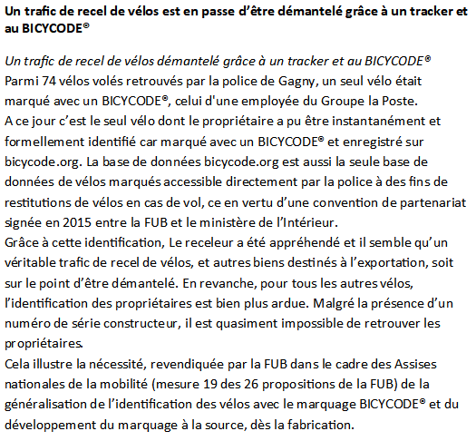

Vous avez toutes les bonnes conditions réunies pour faire du vélo votre mode de déplacement dans vos trajat domicile-travil, mais vous n'avez aucun emplacement sécurisé pour celui-ci ?
Vous pouvez très bien acheter un bonne antivol ou vérifier sa résistance sur un site qui tests les antivols .
Vous pouvez aussi obter pour le marquage Bicycode . Celui-ci permet d'identifier votre vélo et en cas de vol que les forces de l'ordre le retrouve et grâce au marquage, sâche qu'il vous appartient. De plus, vous pouvez faire marquer votre vélo à petit prix, vous pouvez voire où le faire sur : Où faire larquer son vélo . Mais il est possible aussi que des associations de vélo face des marquages gratuits dans votre ville, il faut donc se tenir informé.

Si vous voulez tous savoir sur :
- le vélo
---------------------------------------------------------------------
Lien pour aller vers :
- La page d'acceuil
- Le covoiturage pour le trajet domicile-travail
- Revenir au début du diagramme
Cette page vous est offerte par l'association Steredenn - Mobil'Rance :
Numéro de téléphone : 02.96.39.50.66
Mail : mobilite@steredenn.org
Lien vers
le site de l'association
Vous pouvez aussi nous suivre sur notre page Facebook :
@mobilrancedinan